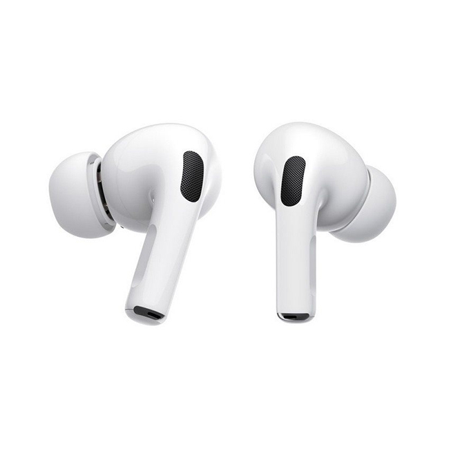
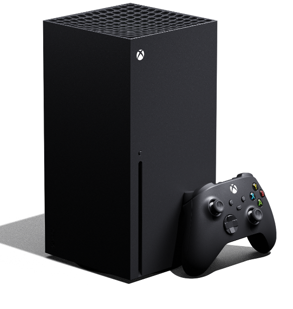
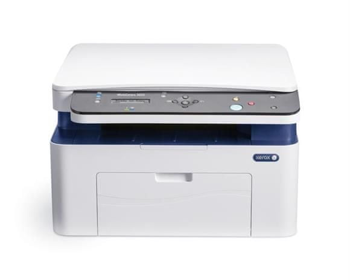
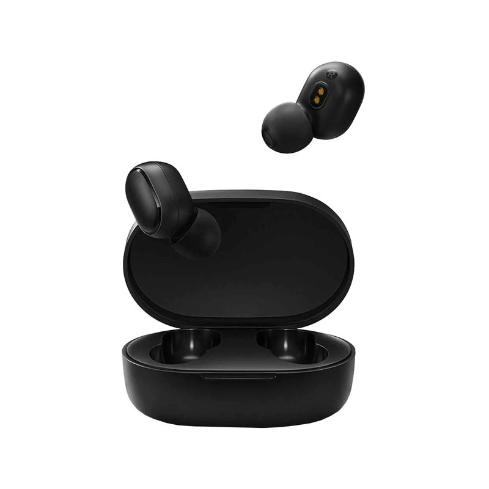

o vnútri novej hernej konzoly sa nachádza ultrarýchly SSD disk, ktorý umožňuje dáta čítať a
zapisovať doposiaľ nevídanou rýchlosťou. PS5 disponuje technológiami, ktoré umožňujú hrať hry v rozlíšení 4K
alebo pri frekvencii až 120 snímok za sekundu. Zariadenie podporuje technológiu Ray Tracing, ktorá vďaka
revolučnému spracovaniu tieňov, odrazov a lúčov svetla posúva grafiku hier na novú úroveň. Samozrejmosťou je
spätná kompatibilita hier z predchádzajúcej generácie konzol, takže si na novej konzole môžete zahrať aj
staršie hry. Súprava pre VR je kompatibilná aj s touto konzolou, takže nemusíte kupovať žiadne ďalšie
zariadenia.
Výkon na novej úrovni
Vďaka novej hardvérovej výbave konzola umožňuje hrať v rozlíšení 4K alebo až pri 120 snímkach za sekundu.
Inovatívna technológia Ray Tracing sa stará o nový spôsob vykresľovania svetelných lúčov a ich odraz od
okolitých objektov. Herný svet
Hlavné charakteristiky
Výrobca – Sony
Typ - Playstation 5
Ovládanie pohybom – ano
Blu-Ray - ano
Wi-Fi - ano
Pevný disk - ano
GPU - RDNA 2 s 36 CU na 2.23 GHz
CPU - Zen 2 s 8 jadrami na taktovaciu frekvenciu až 3,5 GHz
Cena : 1000 € 1500 €

Apple AirPods Pro MWP22ZM/A
Popis produktu
Bezdrôtové slúchadlá AirPods Pro sa stanú nevyhnutným doplnkom vášho iPhonu či Apple Watch.
Ponúknu vám perfektnú reprodukciu zvuku, potláčajú okolitý hluk a sú veľmi pohodlné. Mäkké silikónové
koncovky v troch veľkostiach sa prispôsobia tvaru vášho ucha, vďaka čomu vám bez problémov padnú. Slúchadlá
sa postarajú o to, aby vás pri počúvaní nerušilo okolie, ale zároveň disponujú režimom priepustnosti. Ich
súčasťou je nabíjacie puzdro, ktoré vám umožní ich bez obmedzenia používať po celý deň.
Apple AirPods PRO MWP22ZM/A
Ničím nerušené počúvanie
Slúchadlá disponujú schopnosťou potláčať okolitý ruch. Koncovky sa neustále prispôsobujú tvaru vášho ucha,
vďaka čomu tak ponúkajú ničím nerušené počúvanie. Ak však občas potrebujete zároveň vedieť aj o svete okolo
seba, slúchadlá možno jednoducho prepnúť aj do režimu priepustnosti - razom budete počuť aj okolitý hluk.
Hlavné charakteristiky
Výrobca
Apple
Konštrukcia
do uší
Konektor
USB
Typ slúchadiel
štuple
Modelová rada
Apple AirPods
Hmotnosť
10.8 g
Cena : 213,00 250,99 €

Microsoft Xbox Series X
Popis produktu
Nová herná konzola od spoločnosti Microsoft prináša to najlepšie pre fanúšikov konzolového hrania. Konzola
je optimalizovaná pre novú generáciu hier, ale zároveň je zaistená spätná kompatibilita s tisíckami
obľúbených hier naprieč štyrmi generáciami starších konzol. Vychutnajte si výrazné skrátenie načítania,
vylepšenú grafiku v rozlíšení 4K a vysokú frekvenciu až 120 snímok za sekundu. Fanúšikovia kvalitného hrania
sa môžu tešiť na podporu Ray Tracingu a 3D technológiu priestorového zvuku. Xbox Series X navyše disponuje
slotom pre rozšírenie vnútornej pamäte pomocou SSD.
Všetky hry na jednom mieste
Ak hľadáte zariadenie na hranie najnovších titulov, ale zároveň vlastníte aj množstvo hier zo starších
generácií Xbox, určite oceníte spätnú kompatibilitu, vďaka ktorej môžete na jednom zariadení hrať hry
naprieč štyrmi generáciami konzol Xbox.
Hlavné charakteristiky
Výrobca
Microsoft li>
Typ
Xbox Series X
Ovládanie pohybom – nie
Blu-Ray - ano
Wi-Fi - ano
Pevný disk - ano
GPU
RDNA 2 s 52 CU na 1,825 GHz
Cena : 409,00 € 510,99 €

Xerox WorkCentre 3025BI
Popis produktu
Ideálna voľba na doma i do menšej kancelárie. Multifunkčná laserová tlačiareň sa vďaka svojim
kompaktným rozmerom hravo zmestí kamkoľvek budete potrebovať. Za viac než prijateľnú cenu v nej získate
všetko nevyhnutné vrátane WiFi rozhrania umožňujúceho bezdrôtovú tlač povedzme i z mobilného telefónu.
Zariadenie osloví rýchlymi a kvalitnými výsledkami. Využijete ho na kopírovanie aj skenovanie.
Malé rozmery, veľa možností
Tlačte, kopírujte, skenujte. Toto kompaktné multifunkčné zariadenie bez problémov postavíte aj do
priestorov, kde niet miesta navyše. Napriek jeho veľkosti sa naň môžete stopercentne spoľahnúť. Okrem
kvalitných a rýchlych výsledkov sa tešte na všetky funkcie, ktoré by ste od kancelárskej tlačiarne
očakávali.
Hlavné charakteristiky
Výrobca –
Xerox
Typ - laserové
Maximálny formát
A4
Farebná tlač
ne
Oddelené náplne
ano
Displej
ano
Automatický podávač
ano
Cena : 103,99 € 220,33 €

Xiaomi Mi True Wireless Earbuds Basic 2
Popis produktu
Bezdrôtové slúchadlá s nabíjacím puzdrom dokážu pracovať 12 hodín. Žiadne zložité nastavovanie. Stačí ich
prepojiť s vašim smartphonom a hneď sa môžete započúvať do obľúbenej hudby. Slúchadlá vedia fungovať ako
celok i jednotlivo v režime Single-ear. Rozhranie Bluetooth je zárukou rýchleho prenosu a stabilného
pripojenia. Pomocou jediného tlačidla prijmete telefonický hovor, pozastavíte či pustíte skladbu a privoláte
hlasového asistenta. Do zdokonaleného zvuku týchto slúchadiel sa zamilujete na prvé počutie.
Jednoduchá obsluha
Model z dielne Xiaomi nemusíte zložito nastavovať. Pred prvým použitím ho skrátka len prepojíte s vašim
smartphonom, vyjmete z nabíjacieho puzdra a môžete sa započúvať do obľúbenej hudby alebo audioknihy.
Plnohodnotný zvuk i s jedným slúchadlom
Ak potrebujete mať prehľad o dianí v okolí ale nechcete pritom prísť o žiadny tón, skúste si nasadiť len
jedno slúchadlo.